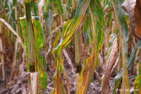

Gray leaf spot (GLS), caused by the fungus Cercospora zeae-maydis, has been one of the most prevalent foliar fungal diseases of corn.
The early GLS lesions are yellow to tan in color
and look very similar to those of other diseases, except that they often have a faint watery halo which can be seen when held up to the light. After about two weeks, lesions appear tan to brown in color and rectangular in shape, bordered
by the veins of the leaf. Individual lesions may be 3 to 4 inches long and 1/16 to 1/8 inch wide, depending on the distance between veins.
As the disease develops and lesions expand, huge areas of the leaf are damaged.
The light brown color of the lesions is retained until environmental conditions are favorable for the production of conidia, at which time they take on a silvery-gray cast, hence the name of the disease.
Scientific Name : Cercospora
Host : Corn
Phylum : Ascomycota
Order : Capnodiales
Rank : Species
Subclass : Dothideomycetidae
